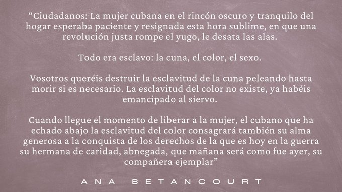
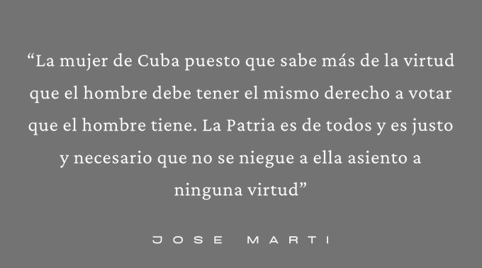
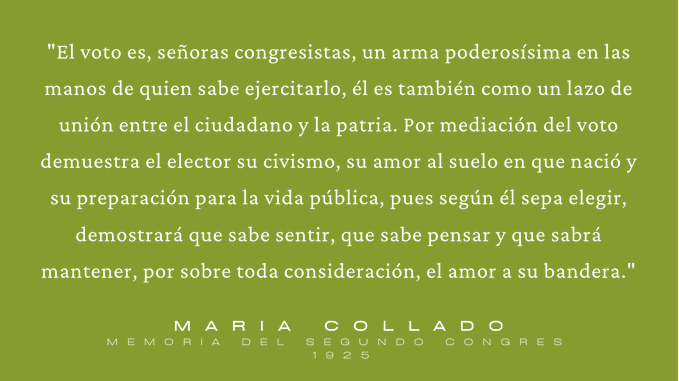
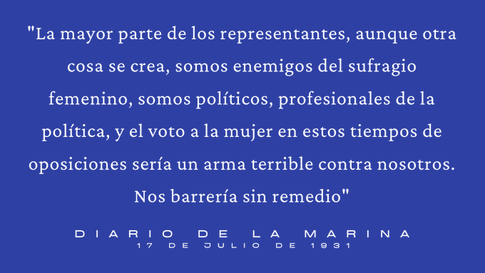

Los Hilos de Monik
Sufragio femenino en Cuba
Publicado el 8 de marzo de 2021 - 25 tweets - Hilo original en Twitter
1
El #DiaInternacionalDeLaMujer es un momento ideal para valorar el esfuerzo de las generaciones anteriores para lograr los derechos que tenemos las mujeres hoy.
Por eso, hoy #8M, les propongo dar un vistazo al largo camino del sufragio femenino en Cuba
2
Una de las primeras declaraciones feministas en la historia de Latinoamérica la hizo Ana Betancourt en 1869 durante la Asamblea Constitucional de la República en Armas en Guáimaro.
Ella solicitó hablar a favor de la mujer cubana, y estas fueron sus palabras
3
Pero la Constitución de Guáimaro no estableció dentro de sus preceptos la regulación de los derechos de la mujer. Tampoco el borrador de la Constitución de Baraguá, ni la de Jimaguayú.
Algunas voces, como Martí, continuaron abogando por ello
4
Fue finalmente en el art. 10 de la Constitución de la Yaya (1897) que se puso: "El derecho electoral se regulará por el Gobierno sobre la base del sufragio universal".
Pero esta Constitución no tuvo vigencia, ni las mujeres contaban en el concepto de "sufragio universal".
5
El primer debate serio al respecto tuvo lugar en la Convención Constituyente de 1900, cuando el delegado Miguel Gener propuso incluir el sufragio femenino. Pero solo obtuvo 9 votos a favor y 17 en contra.
Veamos como estaba el panorama femenino cubano a inicios del siglo XX.
6
En 1903 el 70% de la totalidad de las mujeres que trabajaba en Cuba era de sirvientas.
Para 1907 solo había 12 mujeres profesionales en el país: abogadas, arquitectas, dentistas, ingenieras y médicos. Dos eran extranjeras y todas blancas.
7
En 1919, todavía el 50% de las mujeres que trabajaban en Cuba eran criadas, 1/3 trabajaba en el tabaco o en industrias similares, 1/10 se dedicaba a los servicios, 1/20 a las labores agrícolas y una proporción muy exigua al comercio y al transporte.
8
En este contexto, comienza el activismo político feminista.
Primero, en 1912 surge el Partido Popular Feminista. Poco después se crearían el Sufragistas Cubanas, y el Partido Nacional Feminista. En 1913 se funden en el Partido Nacional Sufragista.
9
De vital importancia para las mujeres fue la aprobación, en 1917, de la Ley de la Patria Potestad, concediéndosela a la madre.
Antes, Cuba se regía por el Código Civil de 1889, que establecía que la mujer solo tenía potestad sobre sus hijos si estaba casada o si enviudaba.
10
En 1918 se promulgó la Ley del Divorcio. El adulterio dejó de ser un delito solo para las mujeres y pasó a convertirse en una causal de divorcio para ambos sexos.
Ese mismo año, surgió el Club Femenino de Cuba.
11
Este impulsó leyes y políticas: la Ley de la Silla, para permitir a las empleadas que trabajaban más de 6 horas poder sentarse; requerir al menos 50% de empleadas donde se vendían artículos femeninos; y otras contra la mendicidad infantil, las drogas y la prostitución.
12
El 20 de mayo de 1921, el recién electo presidente Alfredo Zayas recomendó algunas reformas a la Constitución. Entre ellas, el sufragio femenino.
El Senado nombró al efecto una comisión especial presidida por Cosme de la Torriente.
13
Un mes después, las tribunas del Senado se abarrotaron de mujeres que fueron a escuchar y apoyar el alegato de Torriente. No obstante esta euforia y el apoyo de Juan Gualberto Gómez, la votación del Senado no alcanzó los votos necesarios.
14
Dos años más tarde, en 1923 se celebró en La Habana el Primer Congreso Nacional de Mujeres. Fue el primer evento de su tipo en el continente.
Incluyó entre sus temas el sufragio femenino, reformas en la educación, la protección de los menores, y poner coto a la prostitución.
15
Al 2do Congreso, en 1925, asistió el presidente electo de la República, Gerardo Machado. Su presencia marcó un antes y un después en el movimiento.
En 1924, la presidenta del Partido Nacional Sufragista era Amalia Mallén y la vicepresidenta María Collado.
16
Después del 2do Congreso, surgen diferencias acerca de la postura del Partido con respecto a Machado.
Collado abandonó el partido y formó el Partido Demócrata Sufragista, con la doble finalidad de apoyar al Partido Liberal y obtener el derecho electoral para la mujer.
17
Las alianza de las demócratas sufragistas con Machado también incluyó al Partido Nacional Feminista, la Liga Patriótica Sufragista y el Circulo Sufragista Independiente.
En 1927, Machado impulsó una serie de enmiendas constitucionales para permitirle buscar la reelección.
18
Como resultado, el art. 38 quedó así:"Las leyes determinarán la oportunidad, el grado y forma en que la mujer cubana pueda ejercer el derecho al sufragio".
No logró mucho el feminismo cubano aliándose a Machado. Los congresistas y senadores no estaban interesados en su causa.
19
Ante la creciente presión, en 1931 Machado emplea otra estrategia: designó a Eulalia Miranda como Comisionada del Distrito Central de La Habana, quien propuso una legislación del sufragio... solo para las habaneras y con carácter municipal
Por supuesto que no aceptaron.
20
Entonces, en julio de 1931, Machado otorgó el sufragio sin limitación por Ley Congresional. El problema es que, en la práctica, excluía a mujeres exiliadas, presas o miembros de la oposición.
Entonces, técnicamente, el sufragio femenino en Cuba fue aprobado en 1931, no 1934.
21
Tras la salida de Machado del poder, su determinación presidencial dejó de surtir efecto.
No obstante, durante el Gobierno de los Cien Días, Guiteras designó por primera vez a dos mujeres para cargos de Alcaldesas: Elena Azcuy, en Güines, y Caridad Delgadillo, en Jaruco.
22
El 10 de enero de 1934 de forma sorpresiva, poco antes de la renuncia a la presidencia, Grau San Martín, por un Decreto-Ley otorgó a las mujeres el sufragio femenino sin restricciones.
Un mes después, Mendieta lo convirtió en Ley.
Esta es la fecha que se celebra en Cuba.
23
Dos años más tarde, en las elecciones del 10 de enero de 1936, las mujeres cubanas ejercitaron de manera inaugural el derecho al voto .
Por primera vez, las cubanas participaban en su doble condición de electoras y elegibles: obtuvieron plaza 6 representantes y u1 consejala.
24
Las elecciones presidenciales de 1936 fueron ganadas por la Coalición Tripartita, integrada por los partidos Unión Nacionalista, Liberal y Acción Republicana.
El primer presidente cubano votado por una mujer fue entonces Miguel Mariano Gómez.
25
Finalmente, el sufragio femenino en Cuba quedó plasmado como derecho en la Constitución de 1940.
Art. 97: “Se establece para todos los ciudadanos cubanos, como derecho, deber y función, el sufragio universal, igualitario y secreto".